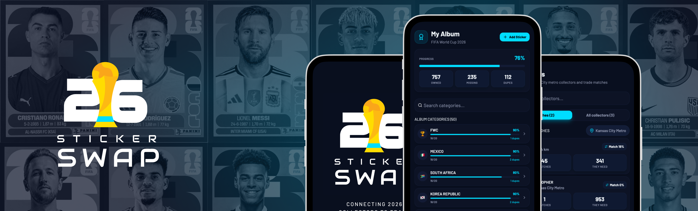
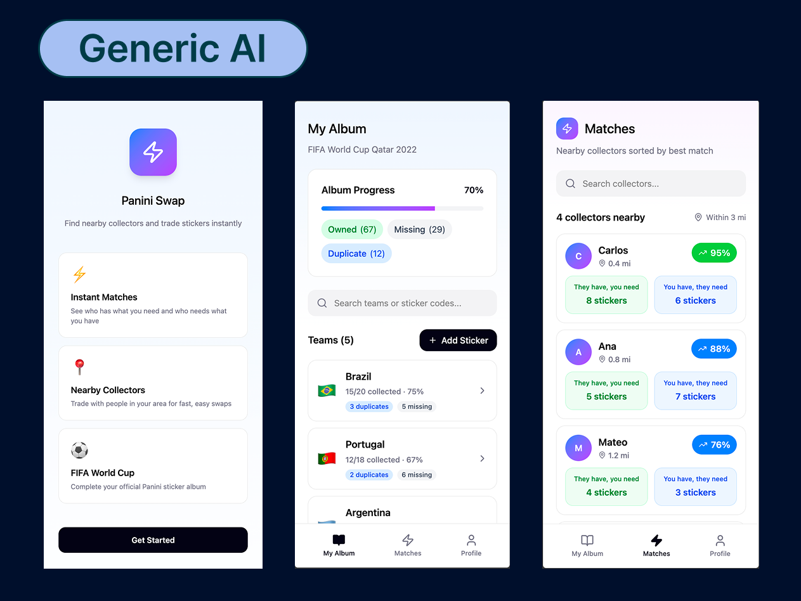
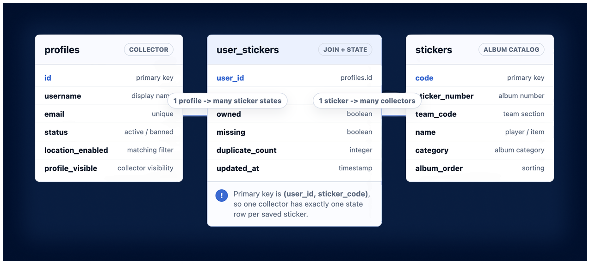
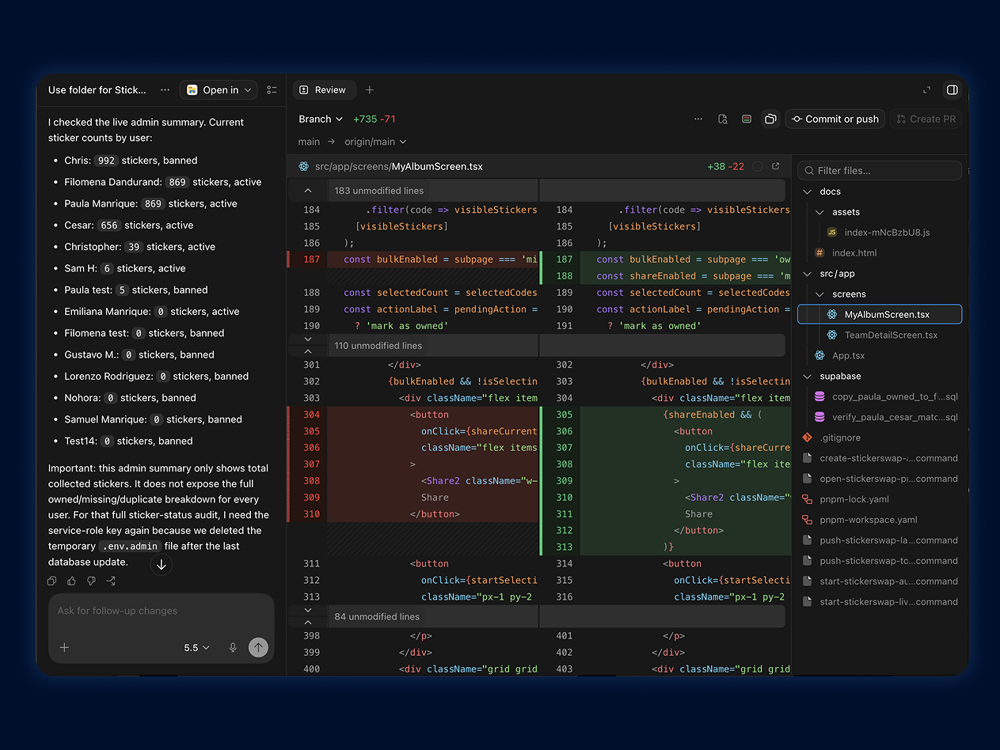
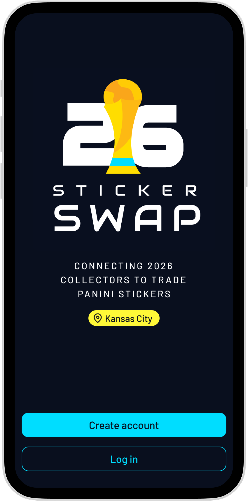
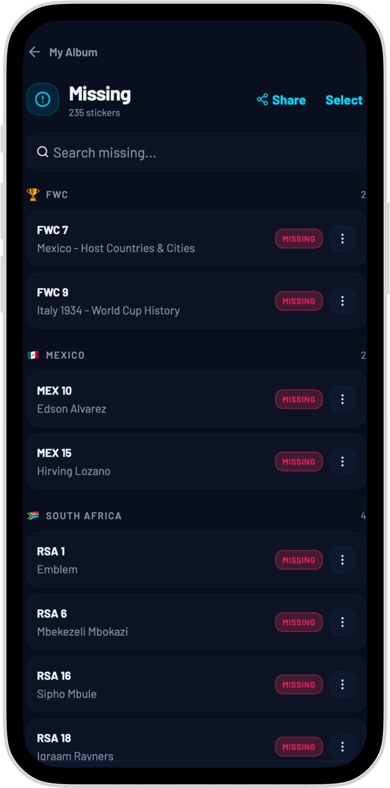
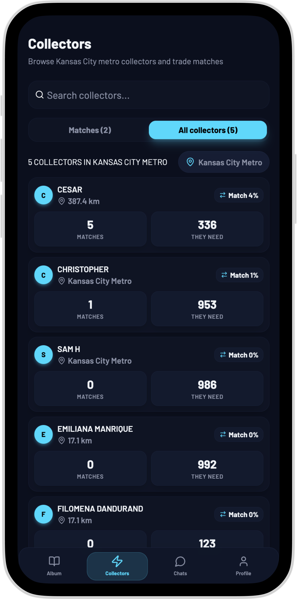
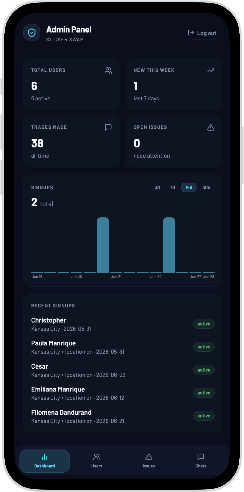

01
Figma Make exploration
Used AI to quickly explore product structure and early flows.

A shipped beta for 2026 FIFA World Cup Panini collectors, built from a personal obsession with the World Cup and a desire to learn how far a designer can take a product with modern AI tools.
Build Path
01
Used AI to quickly explore product structure and early flows.
02
Redesigned key screens and logo by hand after generated UI became inconsistent.
03
Moved the product into code with Supabase, GitLab, and 10 early users.
Design Challenge
01
Collectors do not just need a checklist. They need to know who nearby has the stickers they need and whether a trade is mutual.
02
Figma Make helped with early ideas, but the generated UI and components were inconsistent. I had to manually define the visual direction, key screens, and logo.
03
I needed to move from concept to working product myself while learning where AI accelerated the work and where it created costly debugging loops.
Key Product Decisions

Decision 01
Figma Make was useful for early exploration, but it was not strong enough to maintain a consistent component system. After several AI iterations and running into credit limits, I redesigned the UI direction, logo, and key screens myself so the product had a coherent look.

Decision 02
I moved from generic sticker numbers to a consistent code system like “POR 3” and “CAN 19.” That made search, duplicate tracking, database records, and trade matching behave like a real product instead of a static prototype.

Decision 03
I started in Figma Make, then moved the source of truth into Codex so I could keep improving the product in code. Some parts moved quickly, but chat functionality, real sticker data, and edge-case debugging took many AI iterations. The lesson was not that AI removes complexity; it changes where product judgment and persistence are needed.

Introduces the product around the 2026 World Cup album, Kansas City trading, and clear account entry points.

Turns missing stickers into searchable, shareable lists so collectors can manage what they need.

Shows nearby collectors, match strength, and who has stickers that can become a trade.

Built an admin view to monitor users, signups, trades, and issues during the beta.
What This Shows
StickerSwap is the clearest example of how I use AI as a product design accelerator, not as a replacement for product judgment. AI helped me explore and build, but the interface only became coherent after I manually corrected the visual direction, logo, and reusable patterns.
The build also taught me the real cost of AI-assisted development: complex features like chat, real data import, and backend logic can burn through many iterations. The value was learning how to direct the work, recover when AI got stuck, and keep shipping anyway.
Outcomes
Friends and family beta users signed up and used the product.
Sticker records structured for the FIFA World Cup 2026 album.
Designed, developed, and launched independently with AI-assisted workflows.
I can walk through the product strategy, AI workflow, and what I learned shipping it myself.
Contact me